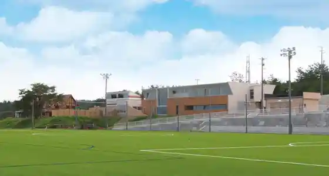
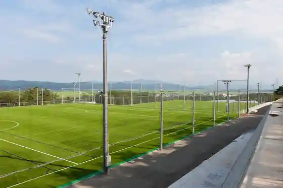
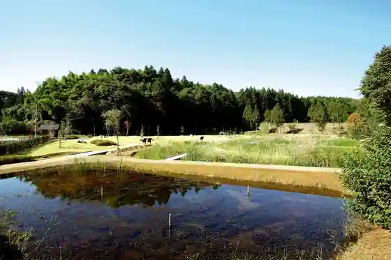
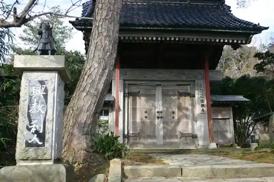

Pia Park Torimbo
Kariwa, Niigata · 0257-31-8600 · Official / source link

Kariwa Pia Park Sakka Ba
Kariwa, Niigata · 0257-31-8600 · Official / source link

Kariwa Araike Shizenkansatsu Park
Kariwa, Niigata · 0257-45-3913 · Official / source link

Katsuyama Joshi Promenade
Kariwa, Niigata · 0257-45-3913 · Official / source link
Hozo Tera
Kariwa, Niigata · 0257-45-2397 · Official / source link

Tofuku In
Kariwa, Niigata · 0257-28-2055 · Official / source link
Joraku Tera
Kariwa, Niigata · 0257-45-3376 · Official / source link
Gen Don Do Plaza
Kariwa, Niigata · 0257-20-3100 · Official / source link
Akada Joshi Promenade
Kariwa, Niigata · 0257-45-3913 · Official / source link
Kariwa Kaizuka
Kariwa, Niigata · 0257-45-3933 · Official / source link